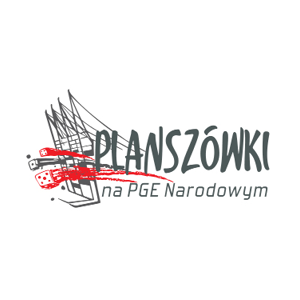

Inaczej Zimowa Jazda Avangardowa. Konwent coroczny odbywający się w czasie mazowieckich ferii zimowych. Skupia się na grach RPG, larpach i planszówkach oraz aktywnościach z nimi powiązanych. Warto nadmienić, że na Zjavie 11 odbyło się w ciągu jednego weekendu 265 sesji RPG, co stanowi niepobity dotąd rekord Polski!
To darmowe i otwarte wydarzenie, które polega na rozgrywaniu sesji RPG. Odbywa się ono co dwa tygodnie w niedzielę w naszej siedzibie na Targowej. Na każdą edycję przypada 7–10 sesji rozgrywanych w najróżniejszych systemach.
Bazyliszek to otwarty darmowy konwent odbywający się latem na warszawskim Ursynowie. Przyciąga parę tysięcy ludzi i jest pomyślany jako impreza dla szerokiej publiczności. Można tu zagrać w planszówki, erpegi, spotkać się z pisarzami czy pogadać o popkulturze i nauce. W 2025 roku miał rangę Polconu.

Jednodniowa impreza skupiająca na terenie Stadionu Narodowego fanów gier planszowych. Oprócz możliwości zagrania w klasyki czy nowości, można nabyć gry bezpośrednio u wydawców. Wstęp na PnN jest darmowy i otwarty dla wszystkich. Avangarda pomaga przy Gamesroomie i zapewnia wsparcie wolontariuszy.
Pierwszy avangardowy konwent online (26–30 marca 2020), w ramach którego odbyło się wiele sesji RPG, prelekcji oraz larpów. Gościli tam m.in.: Jason Morningstar, Gillian Polack czy Vincent i Meguey Baker. Konline odbywał się na dedykowanym serwerze Discord, a rozwiązania stworzone pod ten konwent są wciąż wykorzystywane przez Avangardę.
Avangarda była odpowiedzialna m.in. za: 10 edycji Konwentu Miłośników Fantastyki Avangarda, Polcon 2013 w Warszawie, Noc planszówek w ramach Nocy Muzeów, Planszówki w Chmurach, Magorkon, pomoc przy Warszawskich Targach Fantastyki oraz organizację games roomu na konwentach Cytadela i Pyrkon 2019.